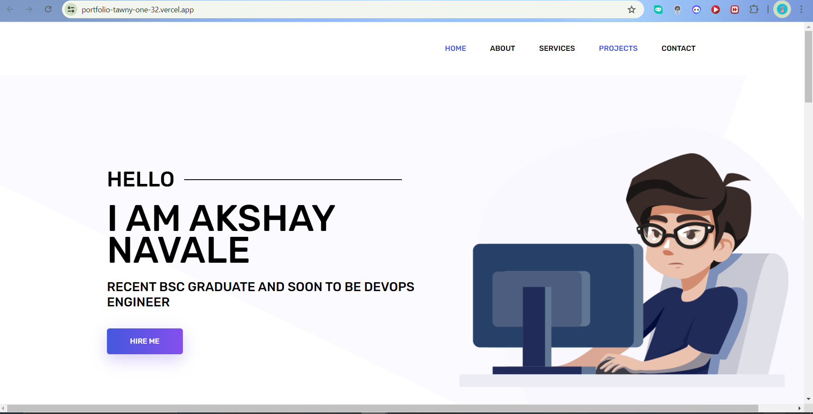

How I Started Building My Portfolio Website

Introduction
Creating a personal portfolio website is a crucial step for any developer looking to showcase their skills and projects. In this blog post, I'll share my journey of building my portfolio website, the benefits of having one, and how it can help you stand out in the competitive tech industry.
My Journey to Building a Portfolio Website
Inspiration and Motivation
I decided to build my portfolio website to have a central place to showcase my work, share my projects, and connect with potential employers and collaborators. A well-designed portfolio can demonstrate not only your technical skills but also your dedication and passion for your craft.
Choosing the Right Tools and Technologies
For my portfolio website, I chose the following stack:
HTML, CSS, JavaScript for the front end to create a responsive and interactive user interface.
PHP to handle any server-side functionality.
GitHub Pages to host my website for free and easily manage version control.
Designing and Developing the Website
I started by sketching out a rough design of how I wanted my website to look. I focused on creating a clean and professional layout that would highlight my projects and skills. Then, I moved on to coding the website, starting with the basic structure using HTML and styling it with CSS. I used JavaScript to add interactive elements and PHP for any dynamic content.
Initial Challenges and How I Overcame Them
When I first started building my portfolio website, I faced several challenges:
Designing a User-Friendly Interface: As a developer, I wasn't as familiar with design principles. I spent time learning about user experience (UX) and user interface (UI) design to create a more intuitive and visually appealing website.
Ensuring Responsiveness: I wanted my portfolio to look great on all devices, so I learned about responsive design techniques using CSS media queries and frameworks like Bootstrap.
Handling Performance Optimization: Ensuring that my website loads quickly was essential. I learned about image optimization, lazy loading, and minifying CSS and JavaScript files.
Tools and Resources That Helped Me
Here are some tools and resources that I found incredibly helpful:
W3Schools: For understanding the basics of HTML, CSS, and JavaScript.
GitHub: For version control and hosting my website using GitHub Pages.
Stack Overflow and Developer Communities: For troubleshooting issues and getting advice from other developers.

Benefits of Having a Portfolio Website
Showcasing Your Skills and Projects
A portfolio website allows you to present your projects in a detailed and visually appealing manner. You can include screenshots, descriptions, and even live demos of your work. This not only showcases your technical skills but also your ability to present and explain your projects effectively.
Building Your Personal Brand
Having a personal website helps in building your personal brand. It gives you a professional online presence where potential employers, clients, and collaborators can learn more about you and your work. It also shows that you are serious about your career and willing to put in the effort to stand out.
Continuous Learning and Improvement
Building and maintaining a portfolio website is an ongoing process. It encourages you to keep learning and improving your skills. As you complete new projects, you can update your website, ensuring that it always reflects your current abilities and interests.
Networking and Opportunities
A well-maintained portfolio website can open doors to various opportunities. It can attract potential employers, clients, and collaborators who are interested in your work. It also provides a platform for you to share your thoughts and knowledge through blogs, further establishing your expertise in the field.
Future Plans for My Portfolio Website
I plan to continuously improve my portfolio website by:
Adding More Projects: As I complete new projects, I’ll update my portfolio to reflect my latest work.
Improving SEO: Implementing search engine optimization (SEO) techniques to increase visibility.
Enhancing the Blog: Adding more posts and implementing features like comments and tags.
Learning New Technologies: Experimenting with new frameworks and tools to keep my skills up-to-date.
Conclusion
Building my portfolio website has been a rewarding experience. It has allowed me to showcase my skills, projects, and personal brand in a professional manner. If you haven't already, I highly recommend creating your own portfolio website. It's a valuable tool that can help you stand out in the tech industry and open up new opportunities.